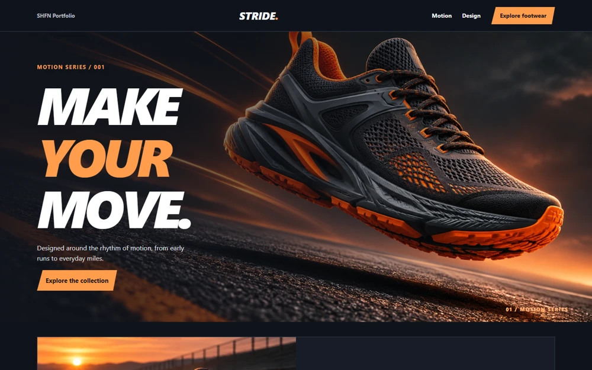
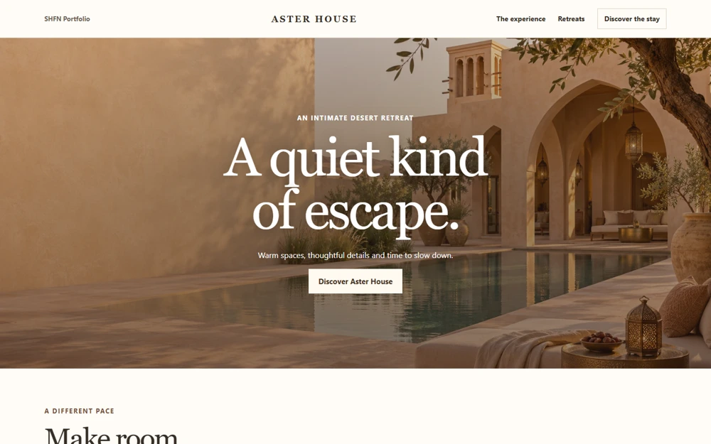

LIVE DESIGN SAMPLE
LIVE DESIGN SAMPLEFASHION & LIFESTYLE
FIELDNOTE
Editorial, warm and minimal fashion campaign with an original image-led seasonal collection layout.
Explore sample siteMohammad Sayyad Shafan
I build responsive websites, searchable product catalogues and digital workflows that make information useful, not just visible.
WEBSITE COLLECTION
Original fictional websites demonstrating different content structures, design languages and responsive page experiences. These are fictional home-page designs, not previous client engagements.
LIVE DESIGN SAMPLEFASHION & LIFESTYLE
Editorial, warm and minimal fashion campaign with an original image-led seasonal collection layout.
Explore sample site
LIVE DESIGN SAMPLEFOOTWEAR & SPORT
Kinetic sportswear direction with energetic product photography, bold type and movement-led categories.
Explore sample site LIVE DESIGN SAMPLE
LIVE DESIGN SAMPLEBEVERAGE & FMCG
A bold energy-drink concept using cinematic product photography, distinctive colour and strong campaign structure.
Explore sample site
LIVE DESIGN SAMPLEBOUTIQUE HOSPITALITY
A refined destination website featuring warm architecture, graceful typography and immersive hospitality imagery.
Explore sample site LIVE DESIGN SAMPLE
LIVE DESIGN SAMPLETECHNOLOGY & SERVICES
A focused technology-services landing page with an original technology image, clear solution positioning and process narrative.
Explore sample siteINTERACTIVE PLAYGROUND
Working browser-based examples. All product data is fictional and used only to illustrate functionality.
Build a complete page section by section, edit layouts and export a draft. All content remains in your browser.
CAPABILITIES
I group my toolkit by the experience it supports rather than by a list of logos.
Clear company sites, service pages and content-managed websites that adapt across screens.
Searchable catalogues, filters, interactive previews and dashboard workflows with clear loading and error states.
Server-side logic, structured data, admin interfaces and maintainable business workflows.
HOW I WORK
My focus is turning requirements into a usable digital experience.
Map audience, content, business goal and requirements before choosing a stack.
Establish hierarchy and responsive layouts, then prove the key flow in a prototype.
Develop maintainable components and connect data, content and interface.
Test interactions, navigation, mobile layout and practical edge cases before delivery.
ABOUT ME
I'm Mohammad Sayyad Shafan, a web developer based in Sharjah, UAE. My expertise spans PHP and MySQL development, responsive web design, interactive catalogues and digital workflows.
I approach design as a problem-solving discipline. I build interfaces that make complex information straightforward to explore and digital workflows easier to use.
I value clarity, practical functionality and the details that make a website feel dependable.
START A CONVERSATION
Connect with me for web development and digital product discussions.